Tempura
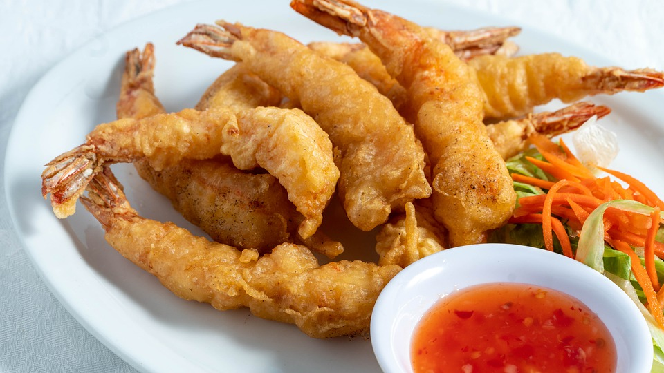
Description
Shrimp Tempura is a Japanese dish made with fresh shrimp dipped in tempura batter and deep-fried until perfectly crispy. Serve it with soy sauce or tempura dipping sauce.
Ingredients
- 10 prawn (Typically, Black Tiger Prawn is used for shrimp tempura at home; more expensive Japanese Tiger Prawns are used at tempura specialized restaurants in Japan)
- potato starch/cornstarch (for dusting)
- 3 cups neutral-flavored oil (vegetable, rice bran, canola, etc) (for deep frying; vegetable oil : sesame oil = 10 : 1)
Tempura Batter: (egg + water : flour = 1 : 1 by volume)
- 1 large egg (50 g w/o shell) (cold)
- ¾ cup iced water (¾ cup + 4 tsp to be precise)
- 1 cup all-purpose flour (plain flour)
Tempura Sauce:
- ¾ cup dashi (Japanese soup stock) (you can use ¾ cup water + 1 tsp dashi powder)
- 3 Tbsp soy sauce
- 2 Tbsp mirin
- 2 tsp sugar
- 2 inch daikon radish (grated and lightly squeeze to drain)
Steps
To Make Tempura Sauce
- Gather tempura sauce ingredients.
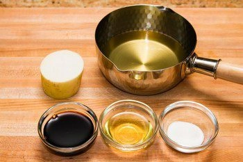
- Combine dashi, soy sauce, mirin, and sugar in a small saucepan and bring it to a boil. Then lower the heat and let it simmer until sugar is completely dissolved. Remove from heat and set aside.
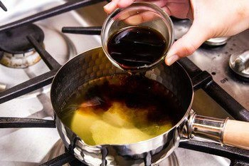
To Prepare Shrimp
- To prepare shrimp, follow the instructions on how to straighten the shrimp.
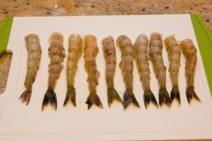
To Make Shrimp Tempura
- In a wok or a medium-size pot, heat 1 ½" (3 cm) of the oil to 340-350ºF (170-180ºC) and maintain the oil temperature at all times. You can check the temperature with chopsticks or with a thermometer. When you see small bubbles around chopsticks, it’s ready for deep frying. If you want to read more about deep frying tips, please read this post.
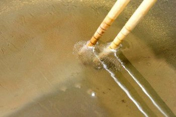
- Gather tempura batter ingredients.
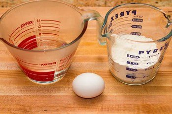
- Sift the flour into a large bowl.
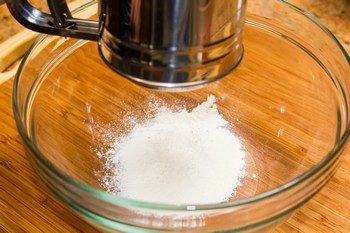
- Add the egg into very cold water in the measuring cup.
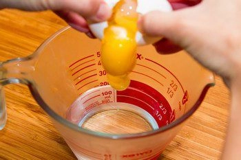
- Whisk the egg mixture vigorously and discard the foam on the surface.
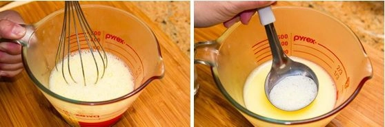
- Slowly pour the egg mixture into the flour. Mix the batter but do not over mix; it's okay to leave some lumps in the batter. Keep the batter cold all the time. Make batter right before deep frying to avoid activation of wheat gluten.
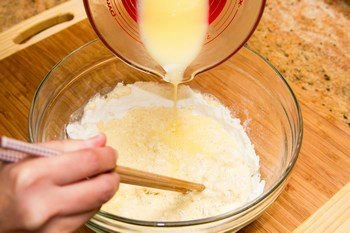
- Dust potato starch (or cornstarch) over the shrimp. This will help the shrimp adhere to the tempura batter.
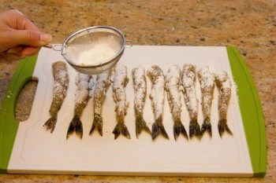
- Coat the shrimp in the batter.
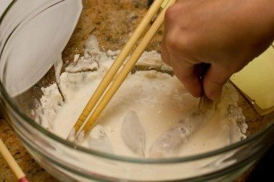
- Deep fry the shrimp until golden brown, about 2 minutes. Do not crowd the wok (pot) because the oil temperature will drop quickly. Don't overcook the shrimp; otherwise, the texture will be tough and dry. Transfer the Shrimp Tempura to a wire rack or a plate lined with a paper towel to drain excess oil. Between batches, skim the crumbs in the oil, which will burn and turn the oil darker if left in the wok (pot).
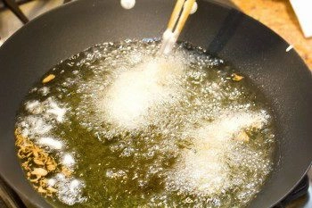
To Serve
- Grate the daikon and squeeze the liquid out.
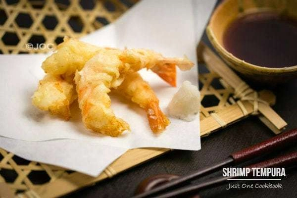
To Store
- You can keep the leftovers in an airtight container and store in the refrigerator for up to 2 days and in the freezer for a month. Reheat in the oven or oven toaster until crisp on the outside and heated through on the inside.
Nutrition
- Calories: 82 kcal
- Carbohydrates: 5 g
f
- Protein: 2 g
- Fat: 6 g
- Saturated Fat: 5 g
- Polyunsaturated Fat: 1 g
- Monounsaturated Fat: 1 g
- Trans Fat: 1 g
- Cholesterol: 21 mg
- Sodium: 102 mg
- Potassium: 15 mg
- Fiber: 1 g
- Sugar: 1 g
- Vitamin A: 19 IU
- Vitamin C: 1 mg
- Calcium: 10 mg
- Iron: 1 mg
This is a sample webpage.
Sources:
Description
Photo
Recipe info